Lab 7: Install the MTA Extension in Dev Spaces
In this lab, you’ll install and configure the Migration Toolkit for Applications (MTA) extension in your Dev Spaces workspace. You’ll prepare the Coolstore application for migration analysis from JBoss EAP 7 to JBoss EAP 8 and enable AI-assisted remediation directly in the IDE.
By the end of this lab, you will have:
-
Created a Dev Spaces workspace for the Coolstore application
-
Installed the Language Support for Java extension
-
Installed the MTA extension
-
Connected the MTA extension to the MTA web console
-
Created a migration profile for JBoss EAP 7 to JBoss EAP 8
Install the MTA Extension in Dev Spaces
The Coolstore application needs to be migrated from JBoss EAP 7 to JBoss EAP 8. You’ll start by preparing your Dev Spaces workspace and installing the MTA extension to bring migration analysis and AI-assisted remediation directly into the IDE.
Access your Dev Spaces workspace
-
Retrive the GITLAB_URL as you shall be needing it in upcoming step.
GITLAB_URL="https://$(oc get route -n gitlab -l app=webservice -o jsonpath='{.items[0].spec.host}')" echo "$GITLAB_URL" -
Retrieve the Openshift Dev Spaces dashboard URL and navigate to it using your browser.
oc get checluster devspaces \ -n openshift-devspaces \ -o jsonpath='{.status.cheURL}{"\n"}'Log in with your OpenShift credentials if prompted
Figure 1. Red Hat Openshift Login Page(Click the image to view it in full size in a new browser tab)
{kind=link}
Create a Dev Spaces workspace using the Coolstore application repository.
-
Open Dev Spaces and sign in using your OpenShift credentials if prompted.
-
Click Add workspace to create a new workspace.
Figure 3. Create New Workspace(Click the image to view it in full size in a new browser tab) -
Enter the following GitLab repository URL and click Create and Open:
${GITLAB_URL}/mta-apps/coolstore.git
Figure 4. GitLab Repository for Coolstore(Click the image to view it in full size in a new browser tab) -
Wait until the workspace is fully started and ready.
Figure 5. Workspace Creation Process(Click the image to view it in full size in a new browser tab)
{kind=link}
{kind=link}
{kind=link}
Install the Java language support extension required to work with the Coolstore application.
-
In your Dev Spaces workspace, from the lower-left corner, select the Settings (gear) icon, and then select Extensions to open the Extensions Marketplace.
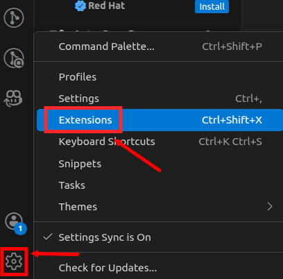
Figure 6. Extensions in VS Code(Click the image to view it in full size in a new browser tab) -
In the Extensions search bar, search for Language Support for Java™ and install the extension.
 Figure 7. Language Support for Java Extension(Click the image to view it in full size in a new browser tab)
Figure 7. Language Support for Java Extension(Click the image to view it in full size in a new browser tab) -
From the Status Bar, click the Java Lightweight Mode icon and switch the Java Language Server to Standard Mode.
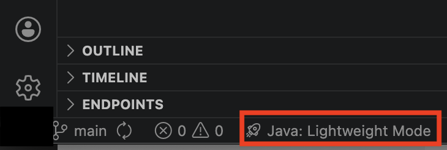
Figure 8. Switch to Standard Mode(Click the image to view it in full size in a new browser tab) -
Wait for the code to compile and verify that the status shows Java: Ready.
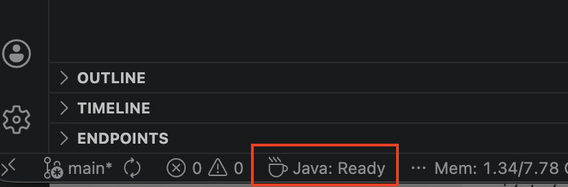
Figure 9. Sample Java: Ready State(Click the image to view it in full size in a new browser tab)
Install the MTA Extension
| You may see two Migration Toolkit for Applications extensions. Select the extension shown in the screenshot with the new MTA logo. |
-
Install the MTA extension.
-
Once the installation is complete, verify that the MTA extension icon appears in the left-hand Activity Bar. Select this icon to open the MTA Analysis view.
 Figure 10. MTA Extension Icon(Click the image to view it in full size in a new browser tab)
Figure 10. MTA Extension Icon(Click the image to view it in full size in a new browser tab) -
Verify that the MTA Analysis view displays the following options:
Open Analysis Panel Manage Profiles
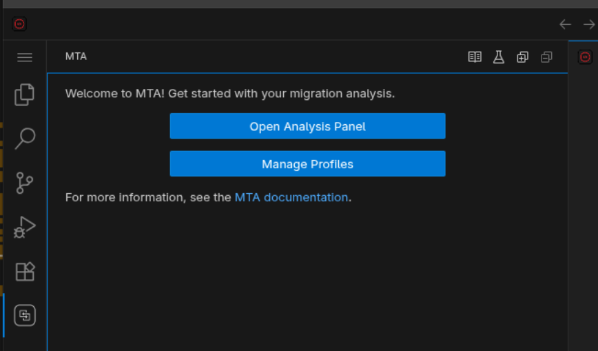
Figure 11. MTA Extension Installed(Click the image to view it in full size in a new browser tab)
Configure the MTA Extension
Connect the MTA extension to the MTA web console and create a migration profile for the Coolstore application.
-
Retrive the OPENSHIFT_CLUSTER_INGRESS_DOMAIN from below command as you will need it in upcoming steps.
OPENSHIFT_CLUSTER_INGRESS_DOMAIN=$(oc get ingresses.config.openshift.io cluster -o jsonpath='{.spec.domain}') echo ${OPENSHIFT_CLUSTER_INGRESS_DOMAIN} -
Open the Analysis Panel by clicking Open Analysis Panel
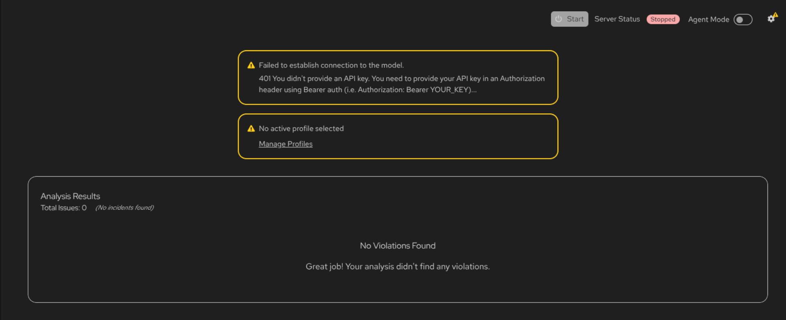
Figure 12. Analysis Panel(Click the image to view it in full size in a new browser tab) -
From the top-right corner of the Visual Studio Code window, select the Settings option to access the MTA configuration panel.
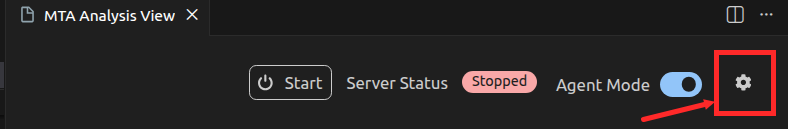
Figure 13. MTA Settings(Click the image to view it in full size in a new browser tab) -
Click Configure Hub Settings under Hub Configuration
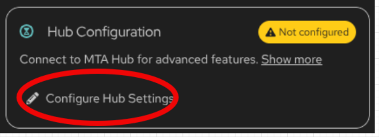
Figure 14. Hub Configuration(Click the image to view it in full size in a new browser tab)In the settings screen, fill in the details, make sure to substitute OPENSHIFT_CLUSTER_INGRESS_DOMAIN you retreive from Step 1.
-
Enable Hub: Checked
-
Hub URL: `https://mta-openshift-mta.${OPENSHIFT_CLUSTER_INGRESS_DOMAIN}
-
Insecure connection: Checked
-
Enable authentication: Checked
-
Select: Credentials
-
Username:
platform-admin -
Password:
openshift -
Solution Server: Enabled
-
Profile Sync: Enabled
Click Save
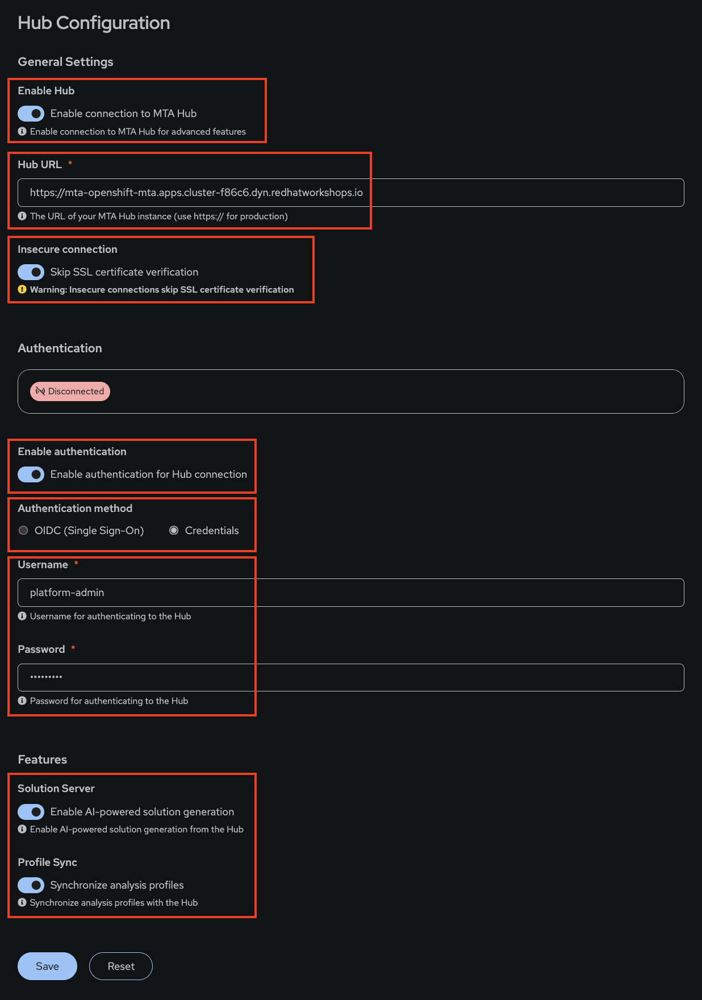
Figure 15. Hub Settings(Click the image to view it in full size in a new browser tab)
-
-
Close MTA Hub Configuration tab and open the MTA Analysis Panel tab.
-
Click Edit in Profile Manager to create a new profile
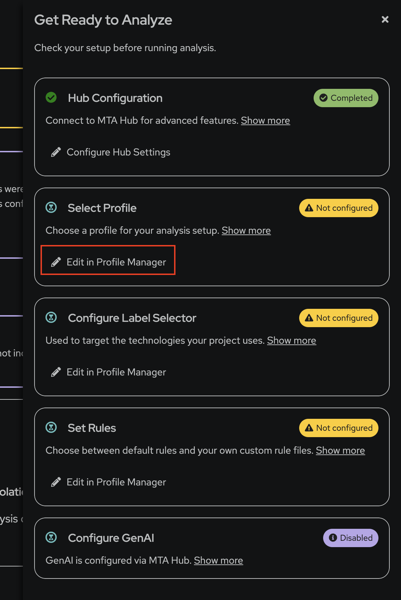
Figure 16. Edit in Profile Manager Settings(Click the image to view it in full size in a new browser tab) -
Click New Profile
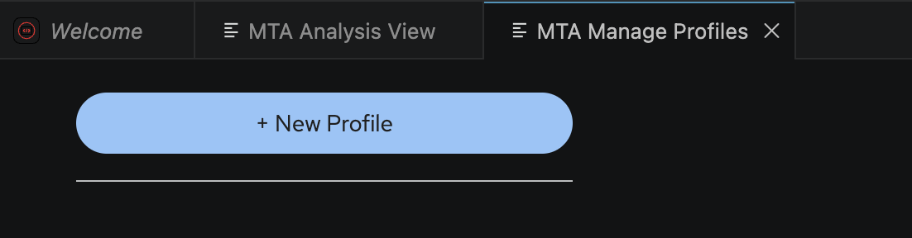
Figure 17. New Profile(Click the image to view it in full size in a new browser tab)Fill in the details:
-
Profile Name:
coolstore -
Target Technologies: Select
eap8 -
Source Technologies: Select
eap7 -
Use Default Rules: Checked
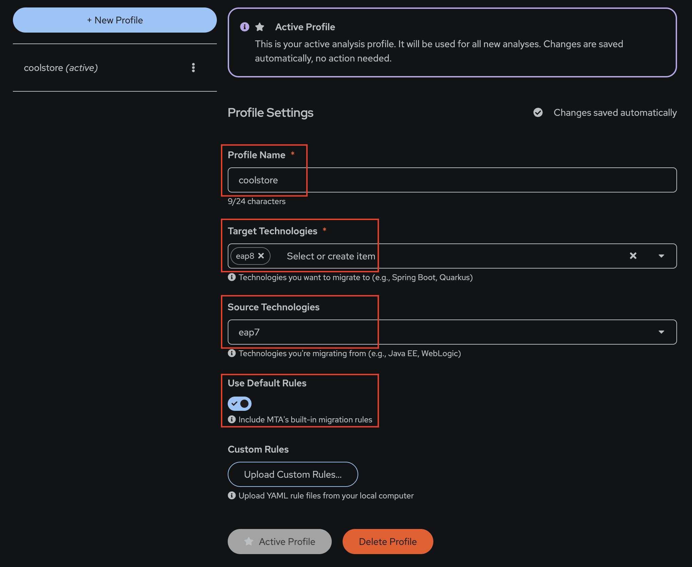
Figure 18. New Profile(Click the image to view it in full size in a new browser tab)
-
-
Final setting should look as below .Final Settings(Click the image to view it in full size in a new browser tab) image::final.png[align="center"]